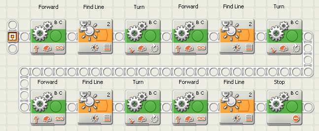

Sunday September 9, 2007
By Doug Frevert
The 2007 FLL season has begun. We've adjusted the training courses.
Once again, in preparing to teach I discovered something. NXT-G WaitFor Blocks don't have a DataHub. Without a DataHub, how useful is a MyBlock?
WaitFor Light 50 percent -- has no data hub.
One of the recurring problems of programming is that copying existing code and pasting it is too easy. Lots of duplicated code is difficult to maintain. One bug found, needs to also be found in every duplicate.
One of the course labs asks the robot to stop at a line found using the light sensor. The WaitFor Block, setup for light, works. Copy and paste it once for every line. Inside every WaitFor Block is the light threshold setting. Let everyone get their robot working. Now change the room lighting. Do you see the problem?
Copy and Paste and changes become tiresome.
Each has an advantage. The #3's advantage is the value is set in the program using it. When debugging program A, having the light threshold setting visible in program A makes sense.
Without a DataHub, the WaitFor can not accept a wired in value for the light sensor threshold. #2 and #3 are impossible.
OK, not impossible. It just takes a bit more programming.
And that is part of the fun of FLL. Some teams reach a roadblock like this and turn around. Some keep looking and find a way.
Others are lucky enough to take classes and ask the right questions.
Doug